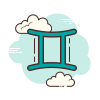
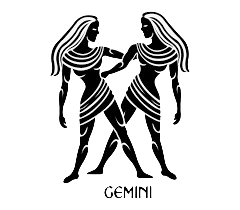

Info: Οι Δίδυμοι (♊) είναι αστρολογικό ζώδιο. Σύμφωνα με τον τροπικό ζωδιακό, οι Δίδυμοι καταλαμβάνονται από τον Ήλιο από 21 Μαΐου μέχρι 21 Ιουνίου.
Είναι το πρώτο κατά σειρά από τα ζώδια του Αέρα και ανήκει στον Μεταβλητό σταυρό. Στον αστρικό ζωδιακό, ο αστερισμός καταλαμβάνεται κατά την περίοδο από 16 Ιουνίου έως 15 Ιουλίου.
Το ζώδιο απέναντι από τους Διδύμους είναι ο Τοξότης.
Πιο αναλυτικά τα βασικά χαρακτηριστικά Διδύμου:
Ημερομηνίες:
21 Μαΐου - 21 Ιουνίου
Στοιχείο:
Αέρας (Επιμονή και οργάνωση)
Ποιότητα:
Μεταβλητό (σηματοδοτεί την προσαρμοστικότητα και την ευκολία διαχείρισης αλλαγών)
Κυβερνήτης Πλανήτης:
Ερμής (πλανήτης της επικοινωνίας και της νόησης)
Αντίθετο Ζώδιο:
Τοξότης
Θετικά:
Επικοινωνιακοί , Ευφυείς , Προσαρμοστικοί
Αρνητικά:
Ασταθείς , Ανυπόμονοι , Επιφανειακοί


Χαρακτηριστικά & Προσωπικότητα των Διδύμων
Οι Δίδυμοι είναι ένα ζώδιο που ξεχωρίζει για την επικοινωνιακή του φύση, την ευφυΐα και την προσαρμοστικότητά του. Από τα βασικά χαρακτηριστικά τους είναι η περιέργεια, η ανάγκη για γνώση και η συνεχής αναζήτηση νέων εμπειριών. Δεν τους αρέσει η ρουτίνα και προτιμούν μια ζωή γεμάτη αλλαγές, ερεθίσματα και κοινωνική δραστηριότητα.
Το ζώδιο αυτό ανήκει στο στοιχείο του αέρα, κάτι που επηρεάζει έντονα τον τρόπο σκέψης και τον τρόπο που επικοινωνεί με τους άλλους. Οι Δίδυμοι είναι κοινωνικοί, ευέλικτοι και έχουν την ικανότητα να προσαρμόζονται εύκολα σε κάθε κατάσταση, κάτι που τους κάνει ιδιαίτερα αγαπητούς στο κοινωνικό τους περιβάλλον.
Η προσωπικότητα των Διδύμων χαρακτηρίζεται από ευστροφία, χιούμορ και έντονη διάθεση για επικοινωνία. Είναι άνθρωποι που σκέφτονται γρήγορα και εκφράζονται εύκολα, κάτι που τους κάνει εξαιρετικούς συνομιλητές. Παράλληλα, έχουν πολλές πλευρές στην προσωπικότητά τους, γεγονός που μερικές φορές τους κάνει να φαίνονται αντιφατικοί.
Στην προσωπικότητά τους κυριαρχεί η ανάγκη για ελευθερία και πνευματική διέγερση. Δεν αντέχουν τη στασιμότητα και χρειάζονται συνεχώς νέες ιδέες, ανθρώπους και εμπειρίες για να νιώθουν ζωντανοί.
Καριέρα & Στοιχείο Διδύμων
Στην καριέρα, οι Δίδυμοι αποδίδουν εξαιρετικά σε επαγγέλματα που απαιτούν επικοινωνία, δημιουργικότητα και γρήγορη σκέψη. Μπορούν να διακριθούν σε τομείς όπως η δημοσιογραφία, το μάρκετινγκ, η διδασκαλία, οι πωλήσεις και γενικά σε οποιοδήποτε επάγγελμα απαιτεί ευελιξία και κοινωνική επαφή.
Η ικανότητά τους να προσαρμόζονται γρήγορα τους δίνει πλεονέκτημα σε περιβάλλοντα που αλλάζουν συνεχώς, ενώ η περιέργειά τους τους βοηθά να μαθαίνουν εύκολα και να εξελίσσονται.
Οι Δίδυμοι ανήκουν στο στοιχείο του αέρα, το οποίο σχετίζεται με τη σκέψη, την επικοινωνία και την ανταλλαγή ιδεών. Αυτό το στοιχείο τους κάνει ιδιαίτερα πνευματικούς, κοινωνικούς και εκφραστικούς. Ο αέρας τους δίνει την ικανότητα να βλέπουν τα πράγματα από πολλές πλευρές και να βρίσκουν δημιουργικές λύσεις σε προβλήματα.
Συμβατότητα & Σχέσεις Διδύμων
Όσον αφορά τη συμβατότητα, οι Δίδυμοι ταιριάζουν ιδιαίτερα με άλλα ζώδια του αέρα, όπως ο Ζυγός και ο Υδροχόος, καθώς μοιράζονται κοινή ανάγκη για επικοινωνία και πνευματική σύνδεση. Επίσης, έχουν πολύ καλή χημεία με ζώδια της φωτιάς, όπως ο Κριός και ο Λέων, τα οποία τους προσφέρουν ενέργεια, πάθος και δυναμισμό.
Οι σχέσεις των Διδύμων βασίζονται κυρίως στην επικοινωνία και την πνευματική σύνδεση. Δεν αντέχουν τη ρουτίνα και χρειάζονται έναν σύντροφο που να μπορεί να τους κρατάει το ενδιαφέρον ζωντανό. Η ελευθερία είναι πολύ σημαντική για αυτούς, καθώς δεν θέλουν να νιώθουν περιορισμένοι μέσα σε μια σχέση.
Στον έρωτα είναι παιχνιδιάρηδες, έξυπνοι και ιδιαίτερα γοητευτικοί. Για να κερδίσει κανείς έναν Δίδυμο, χρειάζεται χιούμορ, καλή επικοινωνία και ευελιξία στη σκέψη. Τους αρέσουν οι σχέσεις που βασίζονται στη συζήτηση, το γέλιο και την πνευματική συμβατότητα.
Συχνές Ερωτήσεις για τους Διδύμους (FAQ)
❓ Ποια είναι τα βασικά χαρακτηριστικά των Διδύμων;
Οι Δίδυμοι είναι ένα από τα πιο επικοινωνιακά, ευφυή και ευπροσάρμοστα ζώδια του ζωδιακού κύκλου. Ανήκουν στο στοιχείο του Αέρα, γεγονός που τους προσδίδει έντονη περιέργεια, κοινωνικότητα και ανάγκη για διαρκή μάθηση και επικοινωνία. Οι άνθρωποι που έχουν γεννηθεί κάτω από αυτό το ζώδιο χαρακτηρίζονται από ευστροφία, χιούμορ και την ικανότητα να προσαρμόζονται εύκολα σε νέες καταστάσεις. Οι Δίδυμοι αγαπούν τις συζητήσεις, τις νέες εμπειρίες και την ανταλλαγή ιδεών, ενώ συχνά διαθέτουν πολλά ενδιαφέροντα ταυτόχρονα. Παράλληλα, μπορεί να φαίνονται απρόβλεπτοι ή αναποφάσιστοι, καθώς δυσκολεύονται να παραμείνουν για μεγάλο χρονικό διάστημα σε μία μόνο επιλογή ή δραστηριότητα. Η επικοινωνία, η δημιουργικότητα και η ευελιξία αποτελούν από τα σημαντικότερα χαρακτηριστικά τους.
❓ Είναι οι Δίδυμοι καλοί στα οικονομικά;
Οι Δίδυμοι διαθέτουν επιχειρηματικό πνεύμα, δημιουργικότητα και μεγάλη ικανότητα να ανακαλύπτουν νέες οικονομικές ευκαιρίες. Ωστόσο, η σχέση τους με τα οικονομικά χαρακτηρίζεται συχνά από μεταβλητότητα. Ενώ μπορούν να είναι ιδιαίτερα έξυπνοι στις επενδύσεις και στις επαγγελματικές επιλογές τους, πολλές φορές παίρνουν αποφάσεις αυθόρμητα ή αλλάζουν εύκολα γνώμη. Οι Δίδυμοι προτιμούν να έχουν πολλαπλές πηγές εισοδήματος και απολαμβάνουν επαγγέλματα που προσφέρουν ποικιλία και συνεχή εξέλιξη. Παρότι δεν θεωρούνται από τα πιο συντηρητικά ζώδια στα οικονομικά, η προσαρμοστικότητα και η ευφυΐα τους συχνά τους βοηθούν να ξεπερνούν δυσκολίες και να δημιουργούν νέες ευκαιρίες για επαγγελματική και οικονομική ανάπτυξη.
❓ Είναι οι Δίδυμοι ανυπόμονοι και επιφανειακοί στις σχέσεις;
Οι Δίδυμοι συχνά χαρακτηρίζονται ως ανυπόμονοι ή επιφανειακοί στις σχέσεις, όμως η πραγματικότητα είναι πιο σύνθετη. Ως ζώδιο του Αέρα, έχουν έντονη ανάγκη για επικοινωνία, πνευματική διέγερση και συνεχή ανανέωση μέσα σε μια σχέση. Όταν αισθάνονται ότι η σχέση γίνεται προβλέψιμη ή χάνει το ενδιαφέρον της, μπορεί να δείξουν ανυπομονησία ή να αναζητήσουν νέες εμπειρίες και ερεθίσματα. Αυτό, όμως, δεν σημαίνει απαραίτητα ότι δεν μπορούν να δημιουργήσουν βαθιές και ουσιαστικές σχέσεις. Οι Δίδυμοι εκτιμούν ιδιαίτερα την ειλικρίνεια, την πνευματική σύνδεση και την αμοιβαία κατανόηση. Όταν βρουν έναν σύντροφο που μπορεί να τους κρατήσει το ενδιαφέρον ζωντανό και να επικοινωνεί ανοιχτά μαζί τους, γίνονται ιδιαίτερα αφοσιωμένοι, υποστηρικτικοί και πιστοί στη σχέση τους.
❓ Ποια επαγγέλματα ταιριάζουν περισσότερο στους Διδύμους;
Οι Δίδυμοι διακρίνονται σε επαγγέλματα που απαιτούν επικοινωνία, δημιουργικότητα, ευελιξία και γρήγορη σκέψη. Χάρη στην ευφυΐα και την προσαρμοστικότητά τους, μπορούν να πετύχουν σε τομείς όπως η δημοσιογραφία, οι δημόσιες σχέσεις, το μάρκετινγκ, η εκπαίδευση, οι πωλήσεις και τα μέσα ενημέρωσης. Επίσης, η αγάπη τους για τη γνώση και την επικοινωνία τούς βοηθά να διακριθούν σε επαγγέλματα που απαιτούν συνεχή επαφή με ανθρώπους και ανταλλαγή πληροφοριών. Οι Δίδυμοι δυσκολεύονται σε εργασίες με αυστηρή ρουτίνα και προτιμούν περιβάλλοντα που τους προσφέρουν ποικιλία, εξέλιξη και πνευματική πρόκληση. Η ικανότητά τους να προσαρμόζονται γρήγορα αποτελεί σημαντικό πλεονέκτημα στην επαγγελματική τους πορεία.
❓ Ποια είναι τα μεγαλύτερα πλεονεκτήματα και αδυναμίες των Διδύμων;
Τα μεγαλύτερα πλεονεκτήματα των Διδύμων είναι η ευφυΐα, η επικοινωνιακή τους ικανότητα, η προσαρμοστικότητα και η περιέργειά τους. Είναι άνθρωποι που μαθαίνουν γρήγορα, δημιουργούν εύκολα κοινωνικές σχέσεις και μπορούν να αντιμετωπίσουν αποτελεσματικά διαφορετικές καταστάσεις. Διαθέτουν χιούμορ, δημιουργικότητα και έντονη επιθυμία για γνώση. Ωστόσο, τα ίδια χαρακτηριστικά μπορούν να οδηγήσουν και σε αδυναμίες. Οι Δίδυμοι μπορεί να γίνουν αναποφάσιστοι, ανήσυχοι ή να χάνουν το ενδιαφέρον τους εύκολα. Επιπλέον, η ανάγκη τους για συνεχή αλλαγή μπορεί να τους δυσκολεύει να παραμείνουν προσηλωμένοι σε μακροχρόνιους στόχους. Παρά τις αδυναμίες τους, η ευστροφία και η κοινωνικότητά τους αποτελούν σημαντικά πλεονεκτήματα.
❓ Ποιες διάσημες προσωπικότητες του κόσμου ανήκουν στο ζώδιο των Διδύμων;
Πολλές διάσημες προσωπικότητες από τον χώρο της επιστήμης, της τέχνης, της μουσικής και της ψυχαγωγίας έχουν γεννηθεί κάτω από το ζώδιο των Διδύμων. Ανάμεσά τους βρίσκεται η Marilyn Monroe, μία από τις πιο εμβληματικές προσωπικότητες του κινηματογράφου. Επίσης, ο διάσημος ηθοποιός Johnny Depp είναι Δίδυμος, όπως και η παγκοσμίως γνωστή τραγουδίστρια και ηθοποιός Angelina Jolie. Στον χώρο της πολιτικής ξεχωρίζει ο John F. Kennedy, ενώ στη μουσική συναντάμε προσωπικότητες όπως ο Paul McCartney. Πολλοί αστρολόγοι θεωρούν ότι η ευφυΐα, η επικοινωνιακή ικανότητα, η δημιουργικότητα και η προσαρμοστικότητα που χαρακτηρίζουν τους Διδύμους αντικατοπτρίζονται και στις ζωές αυτών των σημαντικών προσωπικοτήτων.
 ΚΡΙΟΣ
ΚΡΙΟΣ
 ΤΑΥΡΟΣ
ΤΑΥΡΟΣ
 ΔΙΔΥΜΟΙ
ΔΙΔΥΜΟΙ
 ΚΑΡΚΙΝΟΣ
ΚΑΡΚΙΝΟΣ
 ΛΕΩΝ
ΛΕΩΝ
 ΠΑΡΘΕΝΟΣ
ΠΑΡΘΕΝΟΣ
 ΖΥΓΟΣ
ΖΥΓΟΣ
 ΣΚΟΡΠΙΟΣ
ΣΚΟΡΠΙΟΣ
 ΤΟΞΟΤΗΣ
ΤΟΞΟΤΗΣ
 ΑΙΓΟΚΕΡΩΣ
ΑΙΓΟΚΕΡΩΣ
 ΥΔΡΟΧΟΟΣ
ΥΔΡΟΧΟΟΣ
 ΙΧΘΥΕΣ
ΑΡΙΘΜΟΛΟΓΙΑ
ΙΧΘΥΕΣ
ΑΡΙΘΜΟΛΟΓΙΑ